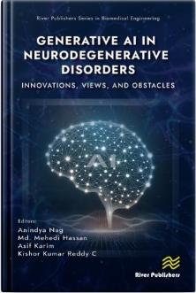

SLICE 04 · Edited Books
8 Scholarly Books & 11 Book Chapters
Deep Learning in Cardiovascular Health Sustainable: AI Approaches for Heart Disease Diagnosis and Treatment
Anindya Nag, Md. Mehedi Hassan, Anupam Kumar Bairagi
View on Springer →
Transforming Global Healthcare: The Role of AI and IoT in Modern Medical Systems
Anindya Nag, Md. Mehedi Hassan, Riya Sil, Asif Karim
View on Routledge →
Graph Neural Networks for Neurological Disorders — Fundamentals, Applications and Benefits in Research and Diagnostics
Md. Mehedi Hassan, Anindya Nag, Sheikh M. Shariful Islam, Herat Joshi
View on Springer →
Brain Networks in Neuroscience: Personalization Unveiled Via Artificial Intelligence
Md. Mehedi Hassan, Farhana Yasmin, S.M.S. Islam, A.K. Bairagi, Si Thu Aung
View on River Publishers →
Feature Fusion for Next-Generation AI: Building Intelligent Solutions from Medical Data
Anindya Nag, Md. Mehedi Hassan, Anupam Kumar Bairagi
View on Springer →

Generative AI in Neurodegenerative Disorders: Innovations, Views, and Obstacles
Md. Mehedi Hassan, Anindya Nag, Asif Karim, C. Kishor Kumar Reddy
View on River Publishers →
Emerging AI Applications in Earth Sciences: Challenges, Impact, and Analysis
Chander Prabha, Md. Mehedi Hassan, Farhana Yasmin, Asif Karim
View on Springer →
Federated Deep Learning for Healthcare
Amandeep Kaur, Chetna Kaushal, Md. Mehedi Hassan, Si Thu Aung
View on Routledge →